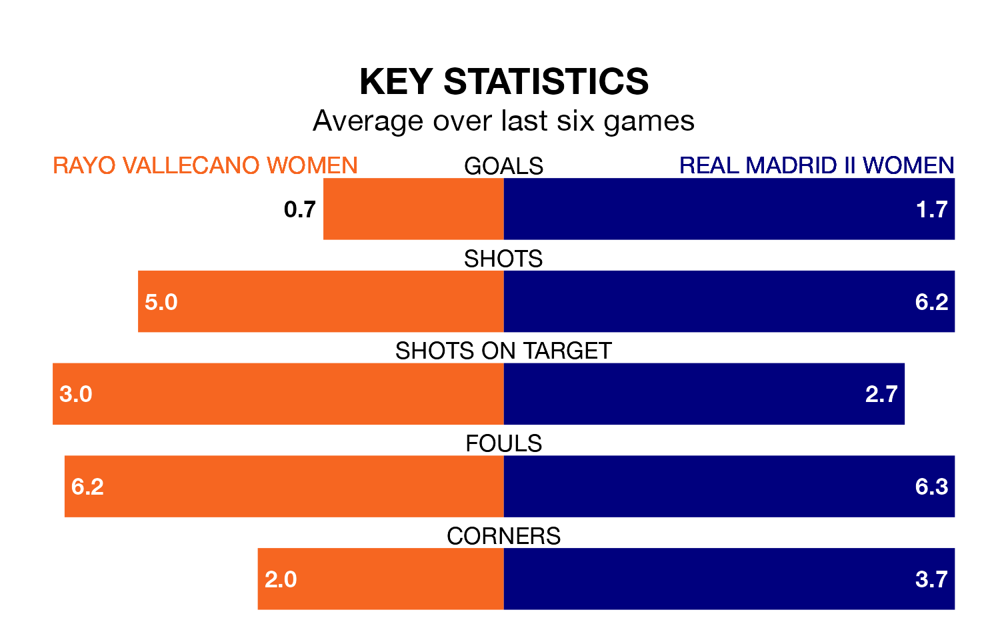

Rayo Vallecano Women host Real Madrid II Women in Sunday lunchtime's match looking to bounce back from defeat last time out in Segunda Federación Femenina.
Rayo, who sit zero in the league after 15 games, fell to a 2-0 home defeat to Atlético Madrid III Women on January 7.
They face a Madrid II Women side who picked up a win in their last match, a 3-2 victory against Espanyol II Women, and who sit first in the table.
With 25 goals in 15 games so far this season, Madrid II Women are scoring more than average in the league with 1.7 goals per game. And they are conceding fewer than average, letting in eight goals at a rate of 0.5 per game.
Rayo, meanwhile, are below average scorers, with 1.1 goals per game, compared to a league average of 1.3. They have also conceded 1.1 goals per game.
The home team are in mixed form in Segunda Federación Femenina, with two wins and three draws from their last six games.
With four wins and two draws over that period, the visitors' form is better – they have taken 14 points from 18, compared to Rayo's nine.
Updated: 15:34, 08/01/24